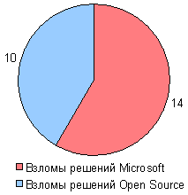
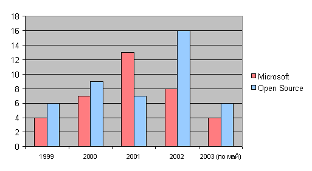
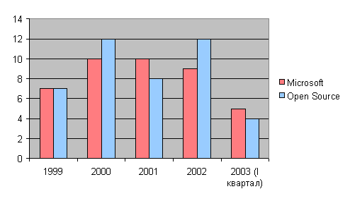

Данные
CERT
Популярные решения американской компании Microsoft и
разработки программистов всего мира, построенные на основе
открытых исходных текстов программ (Open Source). Какие из
систем защищены лучше? Обсуждение этой темы чаще всего
заканчивается ничем. В предлагаемой вашему вниманию статье,
приводятся некоторые новые факты.
Многие эксперты считают, что важной причиной массовых
проблем компьютерной безопасности является широкое
использование программных решений фирмы Microsoft. Иногда даже
утверждается, что операционная система Windows благодаря своей
архитектуре не позволяет обеспечить требуемый уровень
безопасности. Многочисленные недочёты разработчиков Windows
приводят, по мнению этих экспертов, к лёгкости взлома, а также
создают отличное поле для распространения троянских коней,
вирусов, червей и т.п.
Действительно, практически все нашумевшие массовые
"эпидемии" вирусов, червей и т.п. в последнее время касались
именно компьютеров, работающих под Windows. Так, по
данным Internet Security Systems, зафиксировано увеличение
вирусной активности в интернете в первом квартале 2003 года,
причём его основная часть — эпидемия MS SQL Slammer.
Интересно, что в разделе The Register "Virus
news" все доступные в данный момент статьи (самая ранняя —
14 марта 2003 года) посвящены исключительно атакам на Windows.
Опрос
менеджеров по информационным технологиям, проведенный
Forrester, показывает, что менеджеры не доверяют безопасности
решений Microsoft. Наконец, когда в марте 2003 года компания
Microsoft опубликовала в журнале в ЮАР рекламу, утверждающую,
что её решения закрывают путь "хакерам", эта реклама была осуждена
правительственным регулирующим органом за "неподтверждённую
информацию" и снята с последующей публикации.
В качестве основной альтернативы решениям Microsoft на
массовом рынке в данный момент выступают программные системы
на основе ПО с открытым исходным кодом, оно же свободное ПО (Open
Source Software, Free Software). Значительная часть экспертов
считает такое ПО более безопасным. Во-первых,
открытость программного кода позволяет сообществу
профессионалов быстрее выявлять и устранять ошибки.
Во-вторых, распространённые свободные ОС (Linux,
FreeBSD, NetBSD, OpenBSD) построены на технологии UNIX,
включающей в себя проверенные временем средства обеспечения
безопасности.
Однако может ли сам по себе переход на ПО с открытым
исходным текстом значительно улучшить безопасность
компьютерной системы? Такие утверждения иногда можно встретить
в интернете, особенно в письмах "ненавистников" Microsoft.
Однако обращение к фактическим данным не позволяет сделать
такой вывод.
Атаки на свободные системы, как правило, не достигали такой
степени массовости, как некоторые "эпидемии" атак на ПО
Microsoft. Но тем не менее, они вполне известны. Так,
уязвимости в системе удалённого доступа SSH настолько
знамениты, что взлом с использованием одной из них даже оказался
изображён в фильме "Матрица: Перезагрузка". Существуют и
"черви", атакующие компьютеры со свободным ПО — например,
червь Apache/mod_ssl.
В средствах массовой информации упоминаются проблемы
безопасности не только решений Microsoft, но и свободного ПО.
В качестве примера приведём данные по статьям в известном
сетевом СМИ — The Register, в разделе, посвящённом
безопасности.
Количество доступных на данный момент
статей в The Register, раздел Security, в которых упоминается
ПО Microsoft и свободное ПО, шт.

Однако, разумеется, средства массовой информации не могут
служить объективным источником данных о компьютерной
безопасности. Поэтому мы приведём данные, основанные на
информации CERT/CC (Центр
координации групп реагирования на компьютерные чрезвычайные
ситуации). CERT/CC собирает и анализирует информацию о
проблемах компьютерной безопасности и реальных атаках во всём
мире уже в течение многих лет.
Объясним некоторые базовые понятия. В программном
обеспечении могут обнаруживаться недочёты, приводящие к
возможности нарушения безопасности (например, получения
злоумышленником полного или частичного контроОбъясним
некоторые базовые понятия. В программном обеспечении могут
обнаруживаться недочёты, приводящие к возможности нарушения
безопасности (например, получения злоумышленником полного или
частичного контроля над компьютером, внедрения "червя" или
иной злонамеренной программы, либо же остановки работы
компьютера в результате действий злоумышленников). Такие
недочёты называются уязвимостями (vulnerabilities).
После обнаружения уязвимости разработчик ПО обычно выпускает
обновление, исправляющее её.
Целенаправленное нарушение безопасности компьютерной
системы (взлом, внедрение злонамеренной программы, прекращение
работы) мы будем называть атакой. Как правило, атаки
производятся с использованием известных злоумышленнику
уязвимостей. Однако важно, что атака может быть и иной;
например, попытка обманным образом узнать у пользователя
пароль доступа.
CERT Advisories (рекомендации CERT) — это рассылаемые
CERT/CC предупреждения о тех уязвимостях и атаках, которые
CERT/CC считает наиболее опасными.
Соотношение количества CERT Advisories,
касающихся решений Microsoft и распространённого свободного
ПО, за последние годы

Результат может на первый взгляд обескуражить сторонников
ПО с открытым исходным кодом. За все указанные годы, кроме
2001, важных уязвимостей в таком ПО было обнаружено больше,
чем в решениях Microsoft! Причины столь резкого отличия 2001
года могут быть разными, включая выход и широкое
распространение ОС Windows 2000.
CERT Summaries (сводки CERT) выходят раз в квартал и
включают раздел Recent Activity (недавняя активность). В этом
разделе описываются уязвимости и атаки (включая вирусы, черви
и т.п.), о которых наиболее часто становилось известно за
последние месяцы.
Соотношение пунктов в CERT Summaries,
касающихся решений Microsoft и распространённого свободного
ПО, за последние годы

Итак, по этому параметру ПО от Microsoft и ПО с открытыми
исходными текстами практически идут вровень. Приведённые
данные убедительно показывают, что сам по себе выбор
операционной системы и другого ПО отнюдь не решает проблему
компьютерной безопасности — сколь бы ни утверждали обратное
некоторые сторонники тех или иных программных решений.
Появляются также утверждения о том, что существующая
архитектура того или иного ПО существенно затрудняет
обеспечение безопасности. Обычно такая критика раздаётся в
адрес продукции Microsoft, однако как минимум одна
статья утверждает то же о распространённой практике
разработки ПО с открытыми исходными текстами.
Заметим, что на данный момент для пользовательских, т.е.
настольных и портативных компьютеров ОС Linux действительно
заметно менее уязвима, чем Microsoft Windows (правда,
требуется сколь-либо правильная установка ОС).
Распространённые "троянские кони", вирусы и т.п. просто не
функционируют под Linux. Кроме того, практически все
уязвимости Linux относятся к сервисам, не нужным на
пользовательской машине. Однако это связано во многом с
относительно малой распространённостью Linux как
пользовательской ОС. В дальнейшем ситуация вполне может
измениться.
В случае же серверов и компьютерных сетей многое зависит от
качества работы системных администраторов. Так, упомянутый
выше "червь" MS SQL Slammer использовал уязвимость, которая
была исправлена за несколько месяцев до "эпидемии", причём
исправление распространялось бесплатно через интернет. Однако
многие администраторы не позаботились об обновлении ПО.
Чем же объяснить тот факт, что уязвимости решений
американской Microsoft более известны и существенно чаще
используются для массовых атак вирусов, червей, троянских
коней и т.п.? Могут существовать различные ответы. Прежде
всего, немалая часть массовых атак (например, распространённый
в данный момент червь W32/Fizzer) приходит по электронной
почте. Жертвами при этом являются настольные компьютеры.
Роковую роль в данном случае играет массовое распространение
на этих компьютерах ОС Windows.
Однако некоторые известные "черви", такие как MS SQL
Slammer, атакуют именно серверы; жертвами таких червей также
чаще (и более массово) становятся решения Microsoft. Хотя
Microsoft обычно достаточно оперативно выпускает обновления,
исправляющие обнаруженные уязвимости, нередко администраторы
не устанавливают эти обновления, и системы остаются открытыми
для атак. Некоторые специалисты объясняют это тем, что
поскольку Microsoft Windows легче в администрировании,
администраторы нередко оказываются недостаточно
квалифицированными и потому не заботятся об обновлении ПО.
Другие указывают на то, что установка обновлений от Microsoft
иногда приводит к нежелательным последствиям и потому
администраторы стараются избежать её.
В любом случае, подлинное решение проблемы компьютерной
безопасности для практически любого случая отнюдь не сводится
к выбору операционной системы. Даже для "отдельно стоящей"
пользовательской машины требуется, как минимум, правильная
установка ПО и некоторое обучение пользователей. Если же речь
идёт об интернет-сервере или компьютерной сети,
особенно — если она содержит данные, которые необходимо
защитить от утечки, требуется хорошо подготовленное
профессиональное решение, связанное как со всем комплексом
аппаратного и программного обеспечения, так и с подготовкой
менеджеров и сотрудников. В частности, установка тех или иных
ОС на компьютеры должна производиться с учётом мнения
технических специалистов об обеспечении безопасности в данном
случае. Только технический специалист в состоянии провести
полную и грамотную оценку безопасности операционных систем
применительно к тем или иным конкретным
условиям.